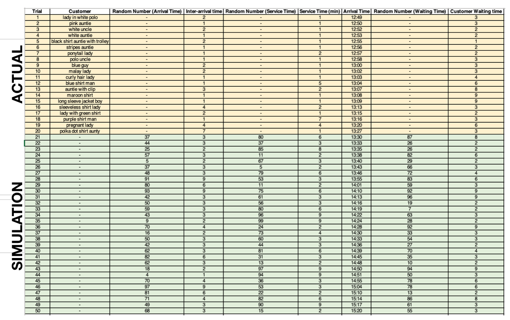
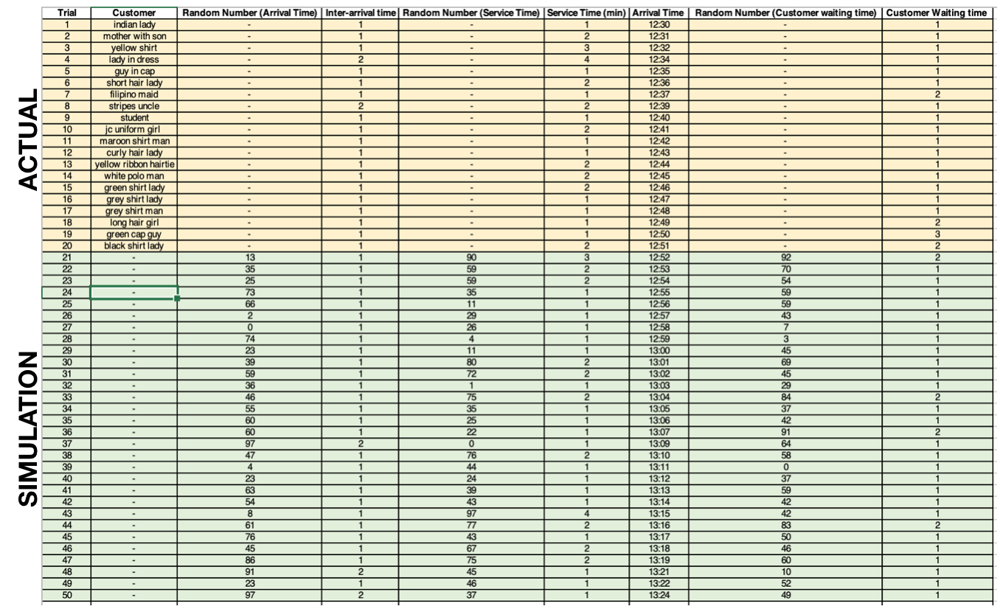

Parameter Estimation
Following the 20 data entries that were collected for each individual type of server, Monte Carlo simulation was carried out to obtain more entries before analysis was carried out.The process of this Monte Carlo simulation is written below:
1) Filter and summarise the statistics obtained from the collected data into the following tables (as shown below).
For Cashier

Table 1: Cashier Interarrival

Table 2: Cashier Service

Table 3: Cashier Waiting
For Self Checkout

Table 4: Self Checkout Interarrival

Table 5: Self Checkout Service

Table 6: Self Checkout Waiting
2) Generate 30 random numbers for each queueing parameter using MS Excel’s “randbetween” function to get random numbers between 0 and 99. (highlighted in green in the tables below)
3) Allocate values to the respective queueing parameters by looking at the random number intervals and the values associated to them
4) Fill in the arrival time accordingly with respect to interarrival times.
For Cashier
Table 7: Cashier Parameter Estimations
For Self Checkout
Table 8: Self Checkout Parameter Estimations